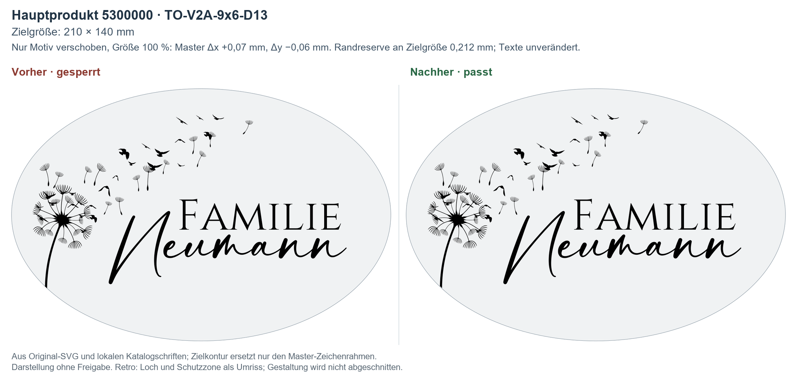
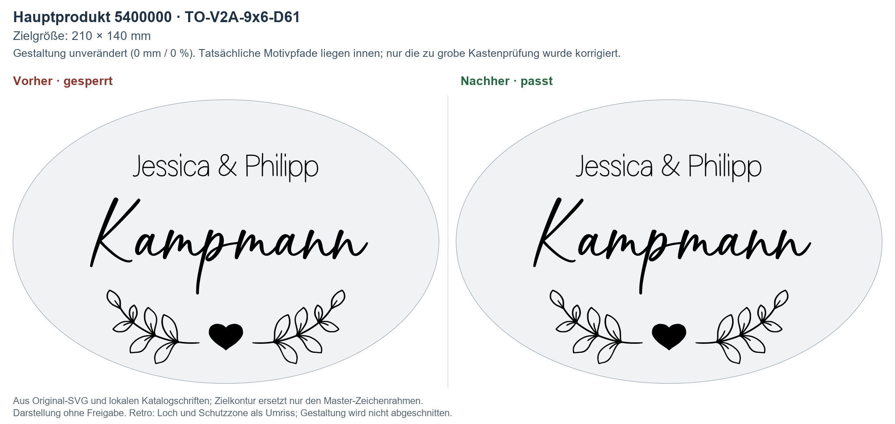
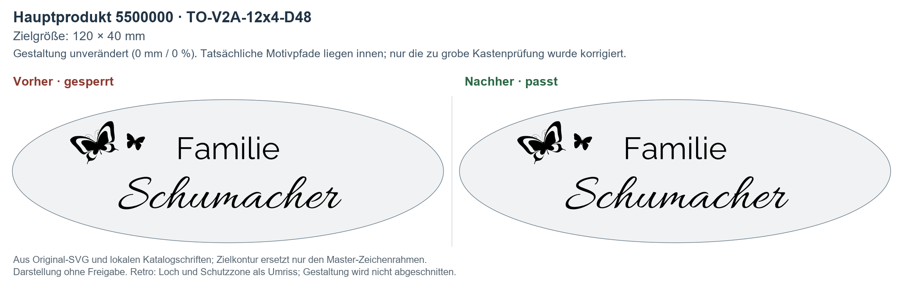
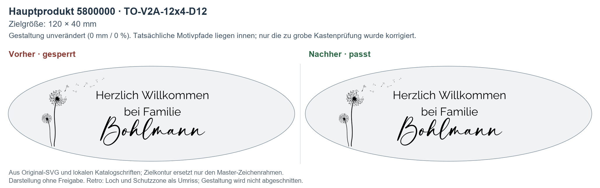
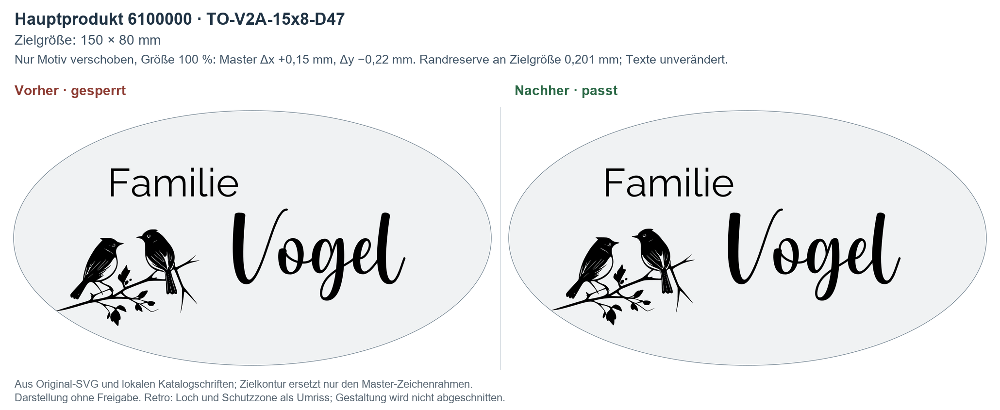
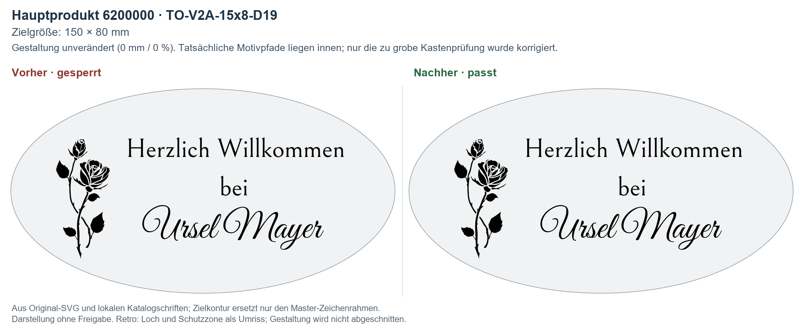
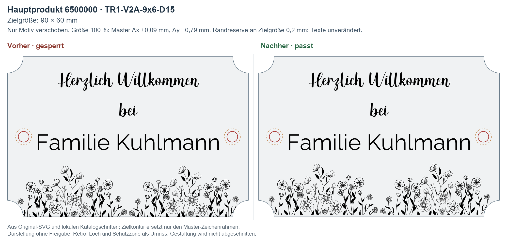
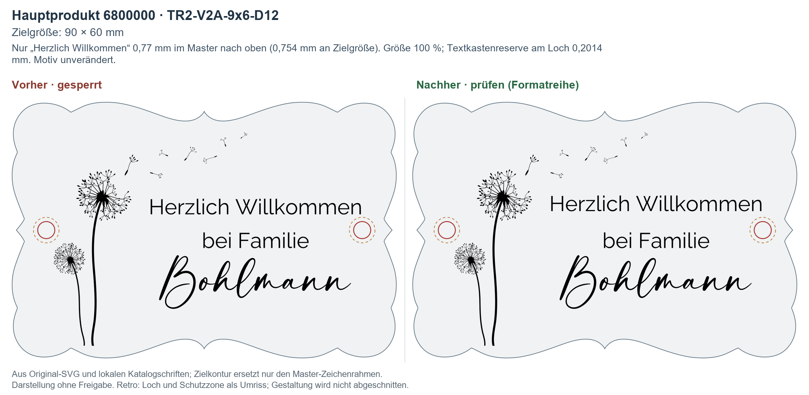
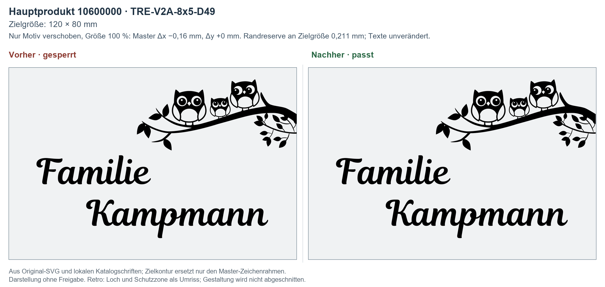
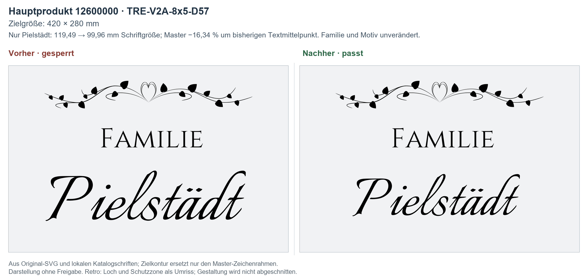

5300000 · 210 × 140 mmTO-V2A-9x6-D13Nachher: passtNur Motiv verschoben, Größe 100 %: Master Δx +0,07 mm, Δy −0,06 mm. Randreserve an Zielgröße 0,212 mm; Texte unverändert.
5400000 · 210 × 140 mmTO-V2A-9x6-D61Nachher: passtGestaltung unverändert (0 mm / 0 %). Tatsächliche Motivpfade liegen innen; nur die zu grobe Kastenprüfung wurde korrigiert.
5500000 · 120 × 40 mmTO-V2A-12x4-D48Nachher: passtGestaltung unverändert (0 mm / 0 %). Tatsächliche Motivpfade liegen innen; nur die zu grobe Kastenprüfung wurde korrigiert.
5800000 · 120 × 40 mmTO-V2A-12x4-D12Nachher: passtGestaltung unverändert (0 mm / 0 %). Tatsächliche Motivpfade liegen innen; nur die zu grobe Kastenprüfung wurde korrigiert.
6100000 · 150 × 80 mmTO-V2A-15x8-D47Nachher: passtNur Motiv verschoben, Größe 100 %: Master Δx +0,15 mm, Δy −0,22 mm. Randreserve an Zielgröße 0,201 mm; Texte unverändert.
6200000 · 150 × 80 mmTO-V2A-15x8-D19Nachher: passtGestaltung unverändert (0 mm / 0 %). Tatsächliche Motivpfade liegen innen; nur die zu grobe Kastenprüfung wurde korrigiert.
6500000 · 90 × 60 mmTR1-V2A-9x6-D15Nachher: passtNur Motiv verschoben, Größe 100 %: Master Δx +0,09 mm, Δy −0,79 mm. Randreserve an Zielgröße 0,2 mm; Texte unverändert.
6800000 · 90 × 60 mmTR2-V2A-9x6-D12Nachher: prüfen (Formatreihe)Nur „Herzlich Willkommen“ 0,77 mm im Master nach oben (0,754 mm an Zielgröße). Größe 100 %; Textkastenreserve am Loch 0,2014 mm. Motiv unverändert.
10600000 · 120 × 80 mmTRE-V2A-8x5-D49Nachher: passtNur Motiv verschoben, Größe 100 %: Master Δx −0,16 mm, Δy +0 mm. Randreserve an Zielgröße 0,211 mm; Texte unverändert.
12600000 · 420 × 280 mmTRE-V2A-8x5-D57Nachher: passtNur Pielstädt: 119,49 → 99,96 mm Schriftgröße; Master −16,34 % um bisherigen Textmittelpunkt. Familie und Motiv unverändert.